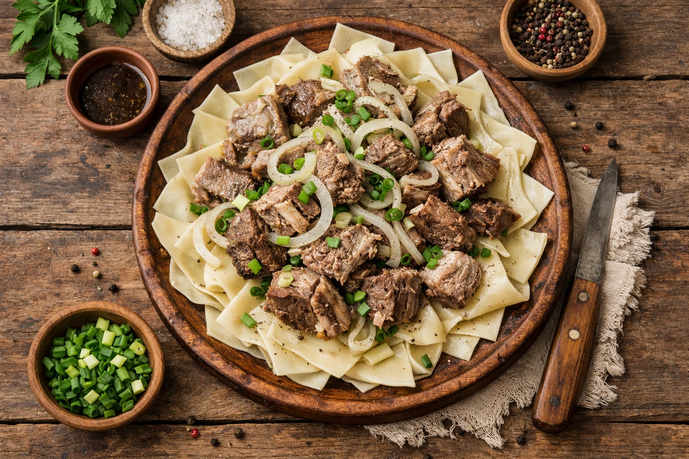
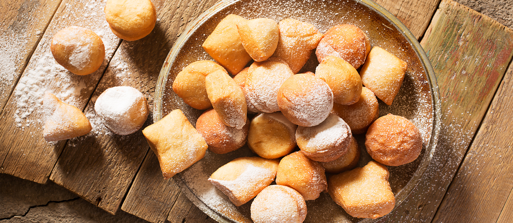
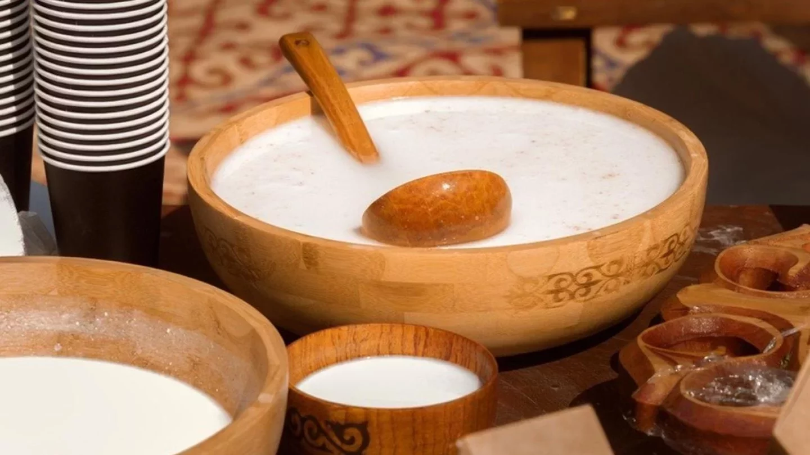

Beshbarmak
Tender cuts served over broad homemade pasta ribbons with rich, savory onion broth.
From an 1830 steppe outpost to an internationally recognized center of diplomatic dialogue and futuristic architecture, explore how Astana evolved across two centuries.
Established on the picturesque banks of the Ishim River, growing rapidly into a lively trading crossroads along historic caravan routes.
The national capital was officially transferred from Almaty to Akmola on December 10, 1997, initiating one of modern history's boldest urban architectural projects.
Awarded this title in recognition of its peaceful inter-ethnic harmony, cultural dialogue, and rapid international diplomatic role.
Astana welcomed millions of global visitors and over 115 countries, unveiling the landmark Nur-Alem sphere and green technology district.
Home to Astana IT University, the Astana International Financial Centre (AIFC), and world-renowned cultural theaters.
Hearty, comforting dishes made for family feasts and cold winters:

Tender cuts served over broad homemade pasta ribbons with rich, savory onion broth.

Golden, airy fried dough spheres served steaming hot alongside milk tea.

Sun-dried tangy cheese curds and nourishing fermented milk drinks of the nomads.